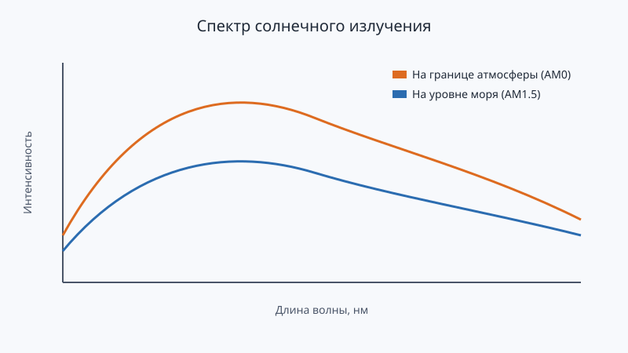
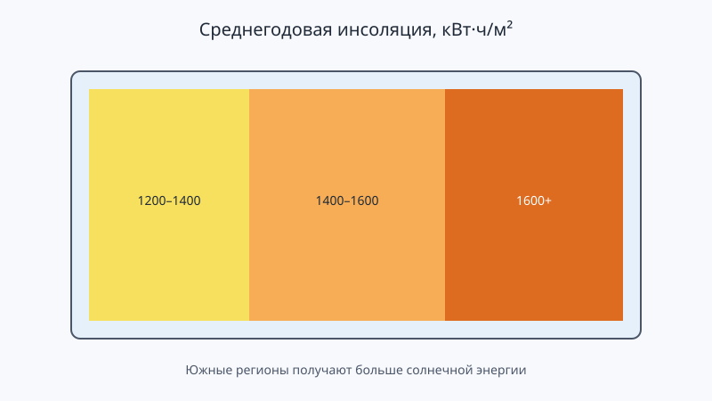

Глава 2. Солнечное излучение и ресурсы солнечной энергетики
2.1 Солнечное излучение как источник энергии
Солнечное излучение — это поток электромагнитной энергии, испускаемый Солнцем. Оно является первичным источником практически всех видов энергии на Земле: энергии ветра, гидроэнергии, энергии биомассы и ископаемого топлива.
На верхней границе атмосферы плотность потока солнечного излучения на среднем расстоянии от Земли до Солнца составляет солнечную постоянную, приблизительно равную 1361 Вт/м². По мере прохождения через атмосферу излучение ослабляется за счёт поглощения и рассеяния, что характеризуется воздушной массой (AM).
Количество солнечной энергии, приходящей на единицу поверхности за определённый период, называют инсоляцией. Именно этот параметр является ключевым при проектировании солнечных установок и оценке ресурсов солнечной энергетики.

Солнечное излучение характеризуется не только интенсивностью, но и спектральным составом. Различные технологии — фотоэлектрические и тепловые — по-разному используют отдельные участки спектра, что важно учитывать при выборе оборудования.
2.2 Ресурсы солнечной энергетики
Ресурсы солнечной энергетики определяются количеством солнечной энергии, доступной на данной территории. В отличие от невозобновляемых ресурсов, солнечная энергия относится к возобновляемым источникам энергии (ВИЭ) и практически неисчерпаема в масштабах человеческой цивилизации.
На практике ресурсы солнечной энергетики оценивают по среднегодовой инсоляции (кВт·ч/м² в год), числу солнечных дней, а также по распределению прямой и рассеянной радиации. Эти показатели существенно зависят от широты местности, климата, высоты над уровнем моря и облачности.

Для преобразования солнечного излучения в электрическую энергию используются солнечные элементы, объединяемые в солнечные панели (модули). Работа таких устройств основана на фотоэлектрическом эффекте.
2.3 Методы оценки и карты инсоляции
Оценка ресурсов солнечной энергетики выполняется по нескольким взаимодополняющим направлениям.
- Наземные измерения — актинометрические наблюдения на метеостанциях, дающие наиболее точные данные для конкретной точки.
- Спутниковые данные — оценка инсоляции по результатам дистанционного зондирования атмосферы и облачного покрова.
- Моделирование — расчёт инсоляции на основе климатических моделей и цифровых моделей рельефа.
- Картографирование — построение карт и атласов инсоляции для целей планирования размещения солнечных установок.
Наибольшая точность достигается при совместном использовании измерительных, спутниковых и модельных методов — это стандартная практика при подготовке проектов солнечной энергетики.

Проверка знаний
-
Что такое солнечное излучение?
Поток электромагнитной энергии, испускаемый Солнцем; первичный источник практически всех видов энергии на Земле.
-
Чему равна солнечная постоянная?
Приблизительно 1361 Вт/м² — плотность потока солнечного излучения на верхней границе атмосферы на среднем расстоянии от Земли до Солнца.
-
Что такое инсоляция?
Облучённость поверхности солнечным излучением, обычно выражается в кВт·ч/м² за сутки, месяц или год; ключевой параметр при проектировании солнечных установок.
-
Что характеризует воздушная масса (AM)?
Путь солнечного излучения через атмосферу: AM1 — Солнце в зените, AM1.5 — стандартный спектр для наземных испытаний солнечных элементов.
-
На каком явлении основана работа солнечных элементов?
На фотоэлектрическом эффекте — возникновении электрического тока или разности потенциалов в материале под действием света.
-
Перечислите методы оценки ресурсов солнечной энергетики.
Наземные актинометрические измерения, спутниковые данные, моделирование и картографирование инсоляции.